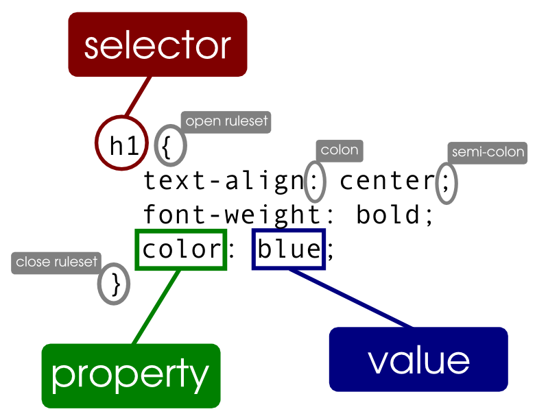

Welcome to Getting Down to the BasiCSS! I'm here to teach newcomers the basics of CSS and to remind seasoned veterans of the minor details that can make a huge difference.
The image below shows a basic template for a CSS file: a selector which refers to something such as a header or paragraph of text on the page and a property-value pair.
Are you ready to start coding CSS and making the most beautiful websites with the only limit being your imagination? Head on over to the BasiCSS page to dive right in!